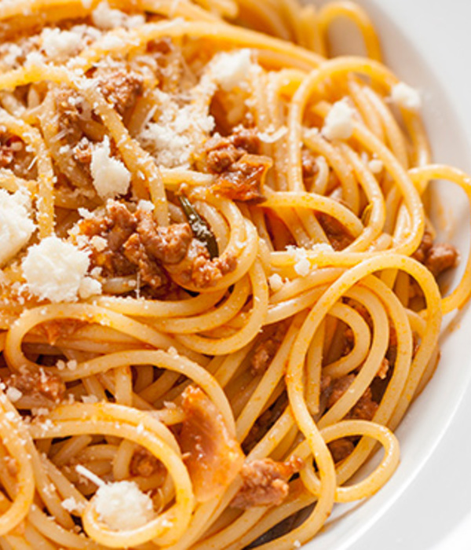

Esparguete à Bolonhesa

Ingredientes:
- Massa Esparguete: 400 g
- Dentes de alho: 2
- Talo de Aipo: 10g
- Cebola: 1
- Azeite: 1 c. de sopa
- Carne de novilho picada : 300 g
- Sal: 1/2 c. de chá
- Tomate pelado em cubos: 200 g
- Polpa de Tomate: 100 g
- Tomilho seco: 1 c. de sobremesa
- Queijo parmesão ralado: 2 c. de sopa
Modo de Preparação:
Num tacho, coza o esparguete em água a ferver durante 8 minutos.
Retire do lume, escorra e reserve.
Pique o alho, o talo de aipo e a cebola.
Numa frigideira antiaderente, refogue o alho, o aipo e a cebola no azeite.
Junte a carne de novilho picada, o sal e deixe cozinhar em lume médio.
Acrescente o tomate pelado aos cubos, a polpa de tomate e o tomilho seco.
Misture bem e deixe cozinhar mais um pouco para apurar.
Sirva o esparguete coberto com o molho e polvilhe com queijo parmesão ralado.